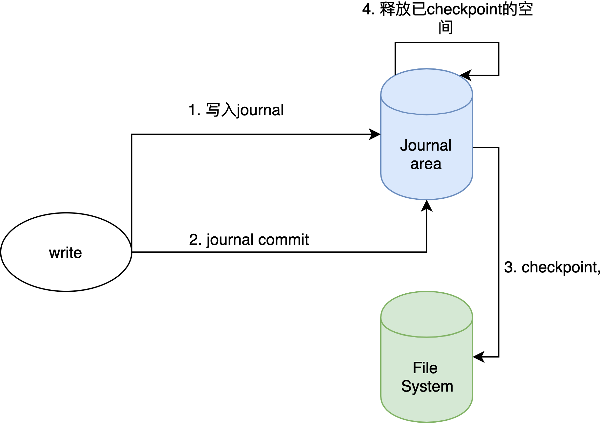
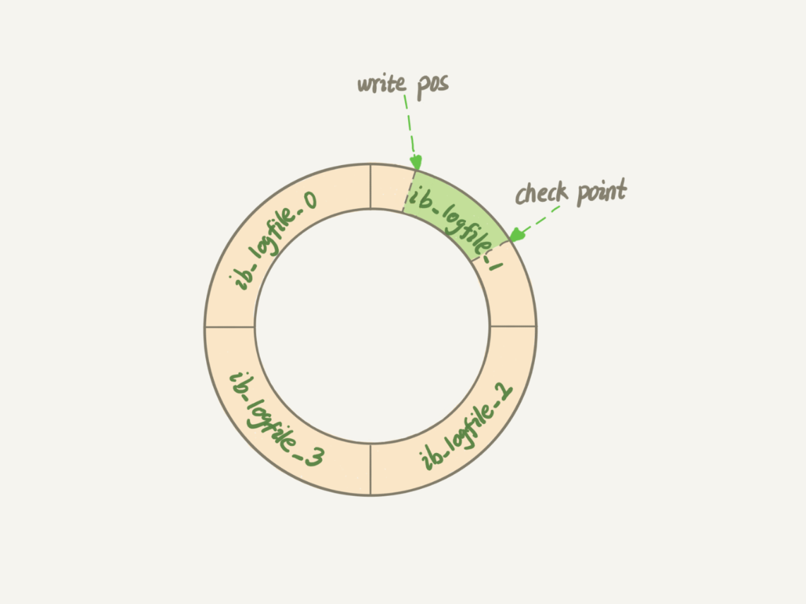

Journal 与 EBS
EBS 的定义
EBS — Elastic Block Storage，简言之就是高可用、高性能、弹性可扩展的分布式块存储服务。对于业务来说，它就是一块磁盘，只不过将业务数据存储于远端网络节点，但是使用方法和体验与访问本地磁盘一样。
EBS 可以作为容器的存储盘，可以解决：
- 有状态容器的状态存储问题
- 海量存储问题：邮件系统、监控平台、数据库、用户录音、集成测试平台、MySQL 备份（需要测试 OLTP/OLAP 的交互操作和在线交易性能）
EBS 的文件系统结构
在EBS分布式块存储系统中，最终存储业务写入数据的服务是ChunkServer。
单机存储引擎位于每个ChunkServer上，业务的数据读写请求到达ChunkServer后，最终通过单机存储引擎与操作系统文件系统交互来写入或读取数据。
业务申请的每一块ebs网络盘在我们的系统里都对应一个Volume。Volume本身是一个逻辑概念，每个Volume被切分成多个Chunk，Chunk最终对应到ChunkSever上文件系统中的一个真实文件，因此我们的单机存储引擎最终会管理这一系列Chunk文件的创建，读写，删除等操作。

Journal就是在ChunkServer上的单机存储引擎这一层引入的，上图中最左侧的“big-journal dir”就是用来存储journal的目录。
其他 Journal 的实现
Linux 中的日志文件系统
文件系统要解决的一个关键问题是防止掉电或系统崩溃造成数据损坏。
我们知道一个文件既包括元数据，又包括真正的用户数据。文件有写入时这两部分数据都需要被写入。因此导致文件系统损坏的根本原因就在于写文件不是原子操作，写操作无法一步完成，如果其中任何一个步骤被打断，就会造成数据的不一致或损坏。
为解决上面说到的问题，日志文件系统(Journal File System)应运而生。
日志文件系统的原理是在进行写操作之前，把即将进行的各个步骤（称为transaction）事先记录下来，保存在文件系统上单独开辟的一块空间上，这就是所谓的日志(journal)，也被称为write-ahead logging(WAL)。日志保存成功之后才进行真正的写操作，把文件系统的元数据和用户数据写进硬盘（称为checkpoint），这样万一写操作的过程中掉电，下次挂载文件系统之前把保存好的日志重新执行一遍就行了（称为replay），避免了前述的数据损坏场景。
结论：所以到达 checkpoint 意味着它之前的 log 不需要 replay 了

MySQL InnoDB引擎的redo log
InnoDB 的 redo log 是固定大小的，比如可以配置为一组 4 个文件，每个文件的大小是 1GB，那么总共就可以记录 4GB 的操作。从头开始写，写到末尾就又回到开头循环写，如下图所示：

write pos 是当前记录的位置，一边写一边后移，写到第 3 号文件末尾后就回到 0 号文件开头。
checkpoint 是当前要擦除的位置，也是往后推移并且循环的，擦除记录前要把记录（注意，这里的记录是 dirty page，不是 redo log 里的内容，这和其他 WAL 的 sync 的操作略有差别）更新到数据文件。
write pos 和 checkpoint 之间的是还空闲的部分，可以用来记录新的操作。如果 write pos 追上 checkpoint，这时候不能再执行新的更新，得停下来先把 checkpoint 推进一下。
EBS 中的 journal
EBS的ChunkServer可能会同时处理大量的写请求，这样写请求最终会转化为大量的磁盘随机写操作，随机写磁盘性能是很差的。有了journal后，可以将这些大量的随机写请求，转化为对journal文件的基本上是顺序的写请求，从面提升写性能，降低写延迟。
同时，如果没有journal，那么用户数据将被直接写chunk文件，这会导致在chunkserver挂掉时chunk文件里出现脏数据，从而使得chunk不同副本出现不一致的问题。
所以日志总有个基本的用处：
- 优化随机写
- 处理并发写